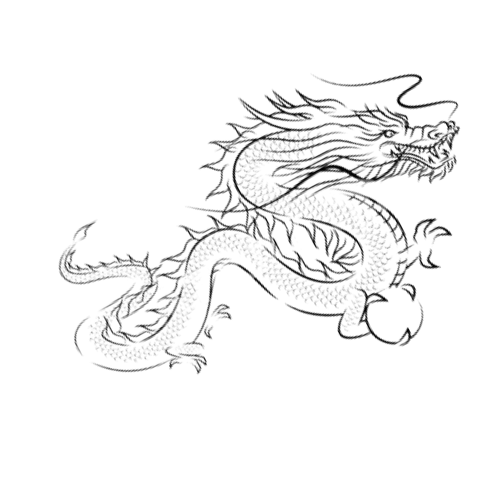
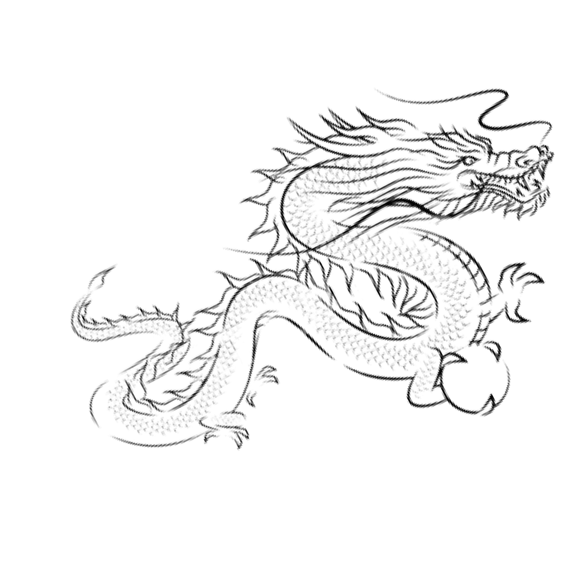

松田染物店について
江戸時代に創業した老舗染物店が紺屋町に佇む。職人による染色文化は今に継承。
 

創業1702年江戸時代から300有余年、
日本の染物文化を現代に伝える老舗染物屋
絶景の城、米子城の城下町として栄えた鳥取県米子市。かつて、山陰一の名城といわれた米子城の外堀だった加茂川の左岸には、染物職人が集まる紺屋（こうや）町があり、伯州綿などの藍染めで賑わっていました。
松田染物店は江戸時代中期、この紺屋町に創業。以来、300年以上にわたって染物の伝統技法を受け継ぎ、現在は13代目・14代目の二世代が暖簾を守っています。
地元で染物屋といえば「紺屋町の松田」と呼ばれて長年親しまれ、昔ながらの染色法とともに、紺屋という町名の由来も今日に伝えています。


江戸時代に創業した老舗染物店が紺屋町に佇む。職人による染色文化は今に継承。
当店では法被、暖簾、旗など様々な染物製品をご案内しています。用途に応じたご提案も可能です。

創業以来320年にわたり、藍染めと筒描き染めの技法を守り続けてきました。
8代目が家紋の描き方を京都から持ち帰り、戦前は藍染め、戦後は筒描き染めを主軸に日本の伝統技法を継承しています。
11代目、12代目、13代目の各代の職人は、鳥取県伝統工芸士に認定され、その技術と功績が評価されています。
現在でも、松田染物店は手染めにこだわり、職人技による染物を提供しています。
伝統技法を守りつつ、現代のニーズに合わせた染物を制作し、顧客の要望に応じた細部までこだわった製品を作り続けています。